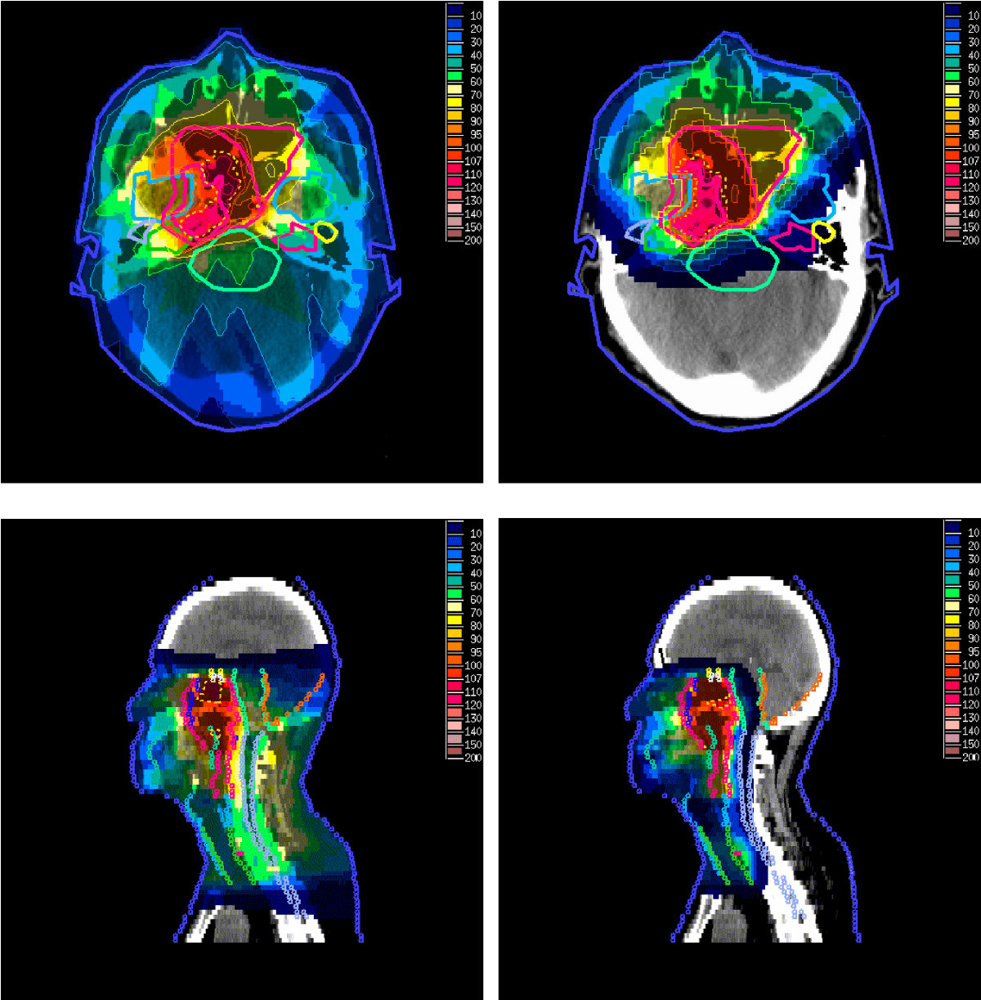

什麼是質子治療？和傳統放射治療有什麼不同？哪些人最適合？
質子治療是不是比較好？答案沒有那麼簡單。從物理原理、實際的臨床效益，到哪些病人真正能獲益，以及它的限制在哪裡。
近年來，越來越多人聽過「質子治療」。有人說副作用比較少，也有人認為效果比較好，因此不少病人在門診第一句話就是：
「醫師，我是不是應該直接做質子治療？」
答案其實沒有那麼簡單。
質子治療是一項先進的放射治療技術，但並不是每位病人都需要，也不是所有癌症都比較適合。真正重要的，是了解它的原理、優點與限制，再依據疾病特性及目前最好的醫學證據，做出最適合自己的治療選擇。
質子治療也是放射治療的一種
很多人以為放射治療和質子治療是兩種完全不同的治療，其實不是。質子治療本身就是放射治療的一種。
放射治療泛指利用高能量放射線破壞癌細胞，而目前臨床最常見的方式包括：
- 光子治療（Photon Therapy）
- 質子治療（Proton Therapy）
兩者治療流程十分相似，都需要治療前定位、個人化治療計畫設計，以及每日精準影像定位，只是使用的放射線種類不同，因此物理特性也有所差異。
光子治療與質子治療最大的差別是什麼？
最大的不同，在於能量如何沉積在人體內。
傳統光子治療可以想像成手電筒的光束。放射線進入人體後，會一路釋放能量，因此在到達腫瘤之前、穿過腫瘤之後，都會有一定程度的輻射劑量。
近年來，隨著 IMRT（強度調控放射治療）、VMAT（容積調控弧形放射治療）及 IGRT（影像導引放射治療）等技術發展，光子治療已能大幅降低正常組織接受的劑量，讓治療更加精準。
質子則具有特殊的物理特性。它會在進入人體後，於特定深度釋放大部分能量（Bragg Peak，布拉格峰），之後劑量快速下降，因此能減少腫瘤後方正常組織受到不必要的照射。

因此，質子治療最大的優勢通常不是「殺癌更強」，而是有機會降低正常組織接受的輻射劑量，在維持治療效果的同時，更有效保護重要器官。
質子治療的效果一定比較好嗎？
不一定。
對許多癌症而言，目前研究顯示，質子治療與高品質光子治療都能達到良好的腫瘤控制效果，因此並不是所有病人接受質子治療，都一定能獲得更高的治癒率。
然而，質子治療最大的價值，在於能更有效降低部分正常組織接受的輻射劑量。對某些病人而言，這不只是代表副作用較少，更可能帶來一連串重要的臨床效益，包括降低急性及長期副作用、改善治療期間及治療後的生活品質，並減少因嚴重副作用而中斷治療或住院的機會。
目前已有越來越多臨床研究支持，在特定癌症中，質子治療能為部分病人帶來額外的好處。例如：
- 乳癌：降低心臟接受的輻射劑量，有機會減少未來重大心血管疾病的風險，尤其是左側乳癌或需要照射內乳淋巴結的病人。
- 攝護腺癌：降低直腸及腸道接受的輻射劑量，可減少腸胃道副作用，提升治療期間及治療後的生活品質。
- 食道癌：降低心臟及肺部的輻射劑量，減少心肺毒性及嚴重治療相關併發症。近年的研究更發現，在部分病人中，質子治療除了降低副作用外，甚至可能改善整體存活率。
- 肝癌：由於能更有效保護剩餘正常肝臟，在部分病人身上有機會安全地提高放射治療劑量（Dose Escalation），進一步提升局部腫瘤控制率。
- 兒童癌症：減少生長中的正常器官接受輻射，可降低發育異常、內分泌功能受損、認知功能影響，以及第二癌症等長期副作用。
值得注意的是，近年部分研究顯示，在特定癌症中，質子治療除了改善副作用外，甚至可能進一步提升整體存活率。這並不一定是因為質子本身「更能殺死癌細胞」，而是因為減少了嚴重治療相關毒性，使病人更能順利完成治療、降低治療相關併發症，最終轉化為更好的長期治療成果。
不過，這些優勢並非適用於所有癌症或所有病人。是否能從質子治療中獲得額外的好處，仍需根據腫瘤的位置、疾病分期、治療目標、周圍重要器官，以及目前最好的醫學證據，由放射腫瘤科醫師進行個別評估。
換句話說，質子治療並不是對每位病人都比較好，而是在適合的病人身上，有機會同時兼顧腫瘤控制、降低副作用、改善生活品質，部分情況下甚至提升長期治療成果。
哪些病人可能比較適合質子治療？
是否適合質子治療，需要綜合考量腫瘤位置、疾病分期、治療目標、年齡，以及周圍重要器官等因素。
一般而言，下列情況可能較能發揮質子治療的優勢：
- 腫瘤鄰近重要器官，希望降低正常組織接受的輻射劑量。
- 兒童癌症，希望減少長期副作用及第二癌症風險。
- 曾接受過放射治療，需要再次照射（部分個案）。
- 特定癌症已有臨床研究證據支持，可降低副作用、改善生活品質，甚至提升部分病人的治療成果。
但是否適合，仍需由放射腫瘤科醫師依據個人病情、治療目標及目前的醫學證據進行完整評估，不能單憑癌症名稱就決定。
質子治療有缺點嗎？
任何治療都有優點，也有限制，質子治療也不例外。例如：
- 並非所有癌症都有足夠證據顯示一定優於光子治療。
- 對某些腫瘤而言，高品質光子治療已能達到非常好的治療效果。
- 治療成本通常較高，目前僅部分適應症有健保給付，其餘仍可能需要自費。
- 質子治療對定位、呼吸控制及治療計畫要求更高，因此需要經驗豐富的醫療團隊共同規劃。
因此，「最新」並不一定代表「最好」，適合自己的治療方式才是最好的治療。
我需要做質子治療嗎？
這是門診最常被問到的問題。
真正的答案，不是看設備，而是看您的疾病。
放射腫瘤科醫師會根據目前最好的醫學證據，綜合評估腫瘤位置、治療目標、周圍器官、預期副作用，以及質子治療是否能帶來實際的臨床效益，再與您共同討論最適合的治療方案。
有些病人接受質子治療，確實有機會降低副作用、提升生活品質，甚至改善長期治療成果；也有不少病人接受高品質光子治療，就能得到非常好的治療效果。
治療方式沒有絕對的好壞，只有是否適合。
賴宥良醫師的話
我在門診常告訴病人：
不要問「哪一種治療最好」，而是問「哪一種治療最適合我」。
質子治療是一項非常重要且先進的放射治療技術，它的價值不只是降低副作用，更是在適合的病人身上，有機會兼顧腫瘤控制、保護重要器官、提升生活品質，甚至改善長期治療成果。
然而，每位病人的疾病型態、身體狀況及治療目標都不同，因此真正重要的，不是追求最新的設備，而是根據目前最好的醫學證據，選擇最適合自己的治療方式。
這也是我一直相信的精準醫療精神——不是為了使用質子而使用質子，而是讓每位病人接受最適合自己的放射治療。
本文為衛教資訊，說明放射治療的一般性原則，無法取代面對面的診療。實際治療建議請與您的主治醫師討論。